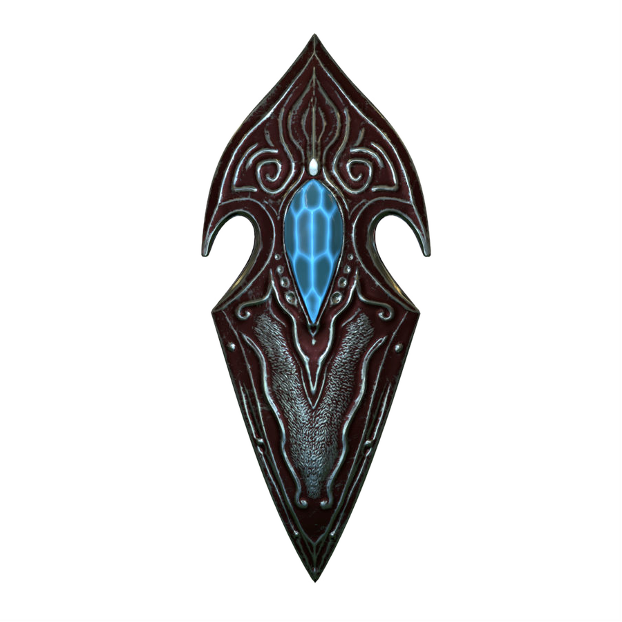

LA SWORD-SHIELD
Apperçu
Descriptif de l'article
Ce bouclier est né d'un fragment d'une épée dont le porteur a conquis la plupart des parties de ce monde pendant un temps. Il a la faculté d'être utilisé comme seconde épée durant un combat.
Ce bouclier fournit 70 points de défense supplémentaires à son porteur, 60 points d'attaque et 20 points en vitesse supplémentaire.